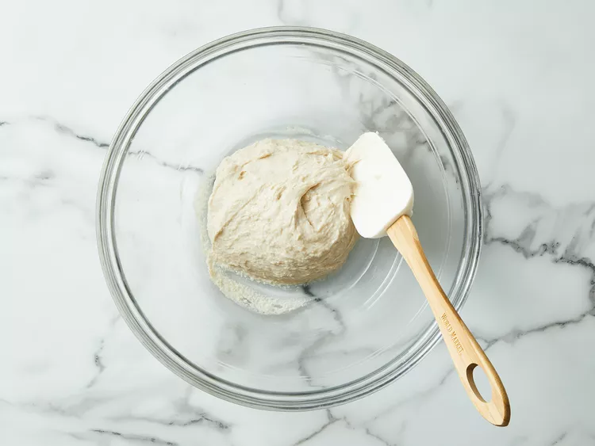
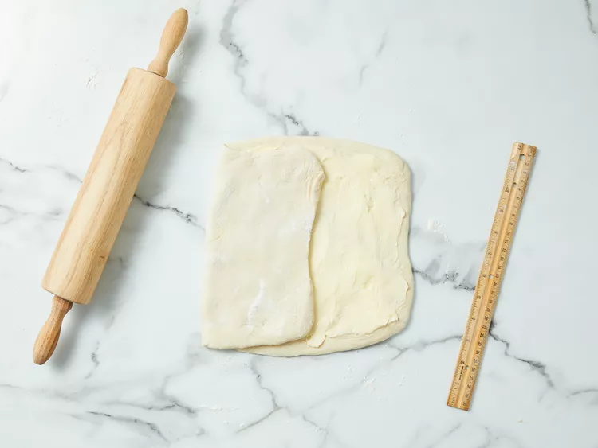
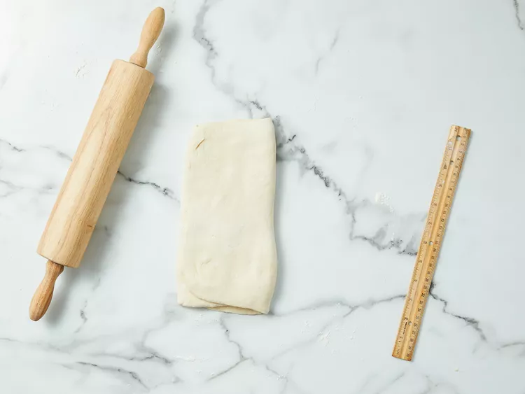
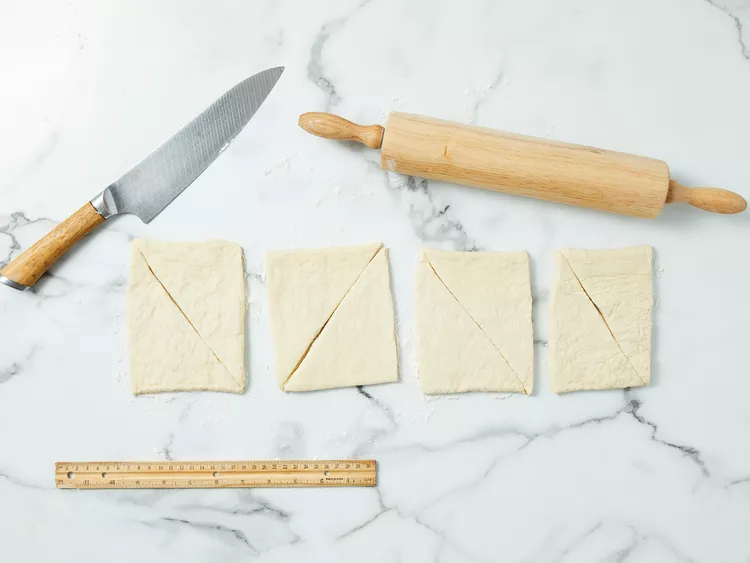

A Detailed Recipe to Make Crossiants
Ingrediants Needed:
- 3 tablespoons warm water(110 degreesF/ 45 degreeC)
- 1 1/4 teaspoon active dry yeast
- 1 teaspoon white sugar
- 1 3/4 cups all-purpose flour
- 2/3 warm milk
- 2 teaspoon white sugar
- 1 1/2 teaspoon salt
- 2 tablespoons vegetable oil
- 2/3 cup unsalted butter,chilled
- 1 large egg
- 1 tablespoon water
Step 1
Combine warm water, yeast and 1 teaspoon sugar in a small bowl.Let stand unit yeast softens and begins to form a creamy foam, about 5 minutes.

Step 2
Measure flour into a mixing bowl. Combine warm milk, 2 teaspoons sugar, and salt in a separate bowl; blend milk mixture, yeast mixture, and oil into flour. Mix well and knead until smooth. Cover, and let rise until over tripled in volume, about 3 hours.

Step 3
Deflate gently, and let rise again until doubled, about another 3 hours.

Step 4
Deflate dough and chill for 20 minutes.
Step 5
Massage butter until pliable, but not soft and oily. Pat dough into a 14x8-inch rectangle.

Step 6
Smear butter over top two-thirds, leaving a 1/4-inch margin all around. Fold unbuttered third over middle third, and buttered top third down over that.


Step 7
Turn 90 degrees, so that folds are to left and right. Roll out to a 14x6-inch rectangle. Fold in three again. Sprinkle lightly with flour, and put dough in a resealable plastic bag. Refrigerate for 2 hours.

Step 8
Unwrap, sprinkle with flour, and deflate gently. Roll to a 14x6-inch rectangle, and fold again. Turn 90 degrees, and repeat. Wrap and chill 2 hours.
Step 9
Preheat the oven to 475 degrees F (245 degrees C).
Step 10
To shape, roll dough out to a 20x5-inch rectangle. Cut in half crosswise, and chill half while shaping the other half. Roll out to a 15x5-inch rectangle. Cut into three 5x5-inch squares. Cut each square in half diagonally.
